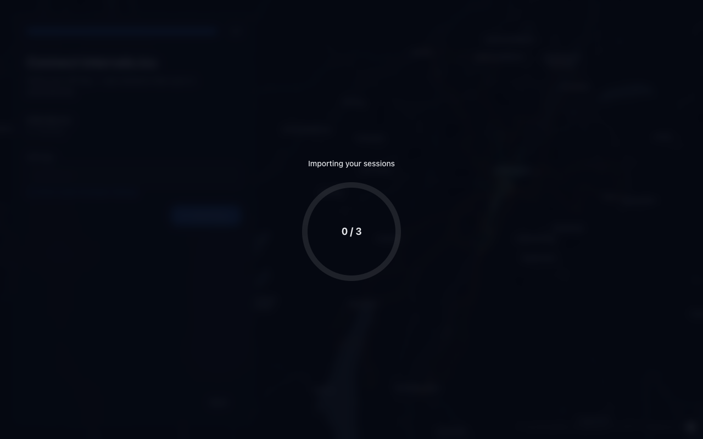
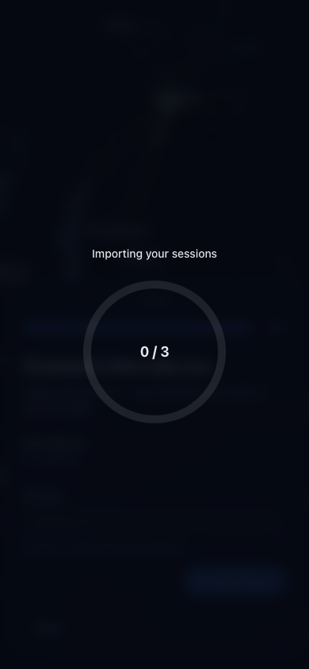

R4Fresh onboarding: no progress, then "nothing new"
Fixed (plan Q2–Q5). A sync now runs only through the intervals-sync query
and its one fetcher syncIntervals. Whether a run shows progress and lists
the full history is read at its start: an overlay opened by Import
(source: 'intervals-import') without a summary. The Import handler opens
that overlay, saves the key and awaits the same query, so whichever trigger fires first
starts the same run. The connect mutation is gone. Import is disabled while a sync runs.
Cause was the conventions merge 2de6192, not this item.
apps/web/src/store/importProgress.ts:8-15, :64-70;
apps/web/src/lib/api/intervalsSync.ts:30, :119,
:148; apps/web/src/queries/intervals/useIntervalsSync.ts:11;
apps/web/src/components/intervals/hooks/useIntervalsImport.ts:58-68;
apps/web/src/components/intervals/index.tsx:28, :76. Deleted:
apps/web/src/mutations/intervals/useConnectIntervalsMutation.ts. Tests:
apps/web/e2e/intervals.spec.ts:82 (waits for "Key valid", one listing,
counter above 0; failed on the old code, passes 3/3 now),
apps/web/tests/lib/api/intervalsSync.integration.spec.ts:248,
:267, :281,
apps/web/tests/store/importProgress.spec.ts:5, :21,
apps/web/tests/components/intervals/index.spec.tsx.
Desktop · 1280 × 800 · import running, downloads helddrag to compare

 BeforeAfter
BeforeAfter
Phone · 390 × 844 · import running

